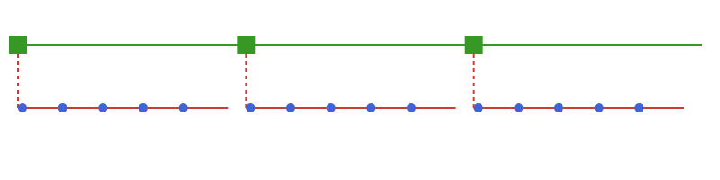
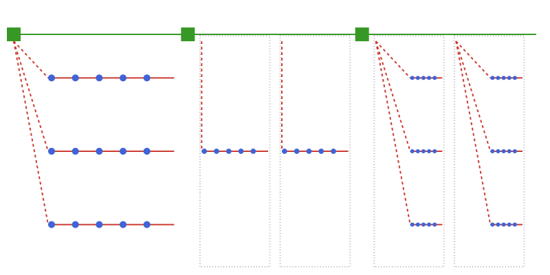
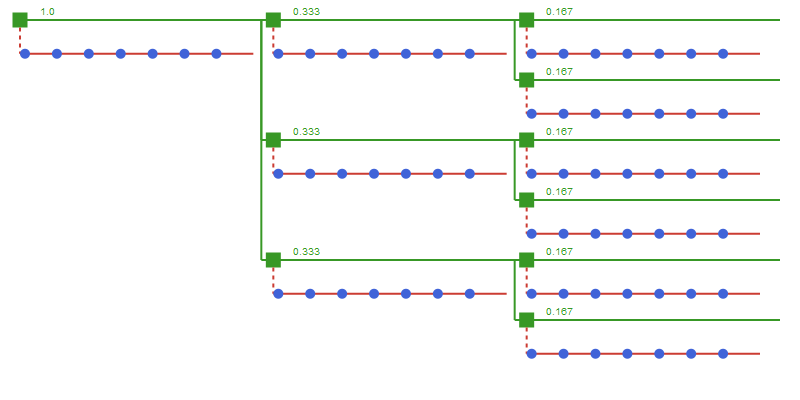

Multi-horizon time structures
TwoLevel structure
The main motivation for the TimeStruct package is to support multi-horizon optimization models. The time structure TwoLevel allows for a two level approach, combining an ordered sequence of strategic periods with given duration and an associated operational time structure.
julia> using TimeStructjulia> periods = TwoLevel( [SimpleTimes(5,1), SimpleTimes(5,1), SimpleTimes(5,1)], );

The following example shows a typical usage of a TwoLevel structure with investment decisions on a strategic level and operational decision variables. It is possible to iterate through each strategic period using the strat_periodsfunction.
julia> using JuMPjulia> m = Model();julia> @variable(m, invest[strat_periods(periods)] >= 0);julia> @variable(m, prod[periods] >= 0);julia> for sp in strat_periods(periods) @constraint(m, sum(prod[t] for t in sp) <= invest[sp]) end
It is also possible to combine a TwoLevel time structure with more complex operational structures like RepresentativePeriods and OperationalScenarios, alone or in combination, as shown in the following example and illustrated the figure below.
julia> oper = SimpleTimes(5,1);julia> scen = OperationalScenarios([oper, oper, oper], [0.4, 0.5, 0.1]);julia> repr = RepresentativePeriods(2, 5, [0.5, 0.5], [oper, oper]);julia> repr_scen = RepresentativePeriods(2, 5, [0.5, 0.5], [scen, scen]);julia> periods = TwoLevel([scen, repr, repr_scen]);

In the above examples, the duration of the operational time structures have been equal to the duration of the strategic periods, but this is not required. If the duration of the operational time structure is shorter than the strategic period, this will be accounted for with the multiple function.
It is also sometimes convenient to use a different time unit for the strategic periods than the operational time periods. This is controlled by the op_per_strat field of the TwoLevel structure that holds the number of operational periods per strategic period.
A typical use case is an investment problem where one uses years to measure duration at the strategic level and hours/days on the operational level. Below is an example with 3 strategic periods of duration 5, 5, and 10 years respectively, while the operational time structure is given by representative periods with duration in days. The op_per_strat is then set to 365.
julia> week = SimpleTimes(7,1);julia> repr = RepresentativePeriods(2, 365, [0.6, 0.4], [week, week]);julia> periods = TwoLevel(3, [5, 5, 10], [repr, repr, repr], 365.0);
TwoLevelTree structure
If there is uncertainty at a strategic level, this can be incorporated using the TwoLevelTree time structure. This structure is represented by a tree, with each node corresponding to a strategic period that contains an operational time structure. The operational time structure can be any combination of the described structures.
The following example demonstrates how to create a regular tree through a constructor (TwoLevelTree(duration::S, branching::Vector, ts::OP; op_per_strat::Float64 = 1.0) where {S,T,OP<:TimeStructure{T}}) where each strategic period spans 3 years and is represented by a week with daily resolution. The second argument of the constructor function specifies the number of branches at each stage of the tree, excluding the first stage.
julia> using TimeStructjulia> week = SimpleTimes(7, 1);julia> two_level_tree = TwoLevelTree(3, [3, 2], week; op_per_strat = 52.0);

The branching probabilities are equal for all branches as indicated in green in the figure.
We also provide the possibility of having differing tree structures through the application of the TreeNode type. A TreeNode approach for above's time structure would be given by
julia> using TimeStructjulia> week = SimpleTimes(7, 1);julia> two_level_tree = TwoLevelTree( TreeNode(3, week, [ TreeNode(3, week, 2, TreeNode(3, week) ) TreeNode(3, week, [0.5, 0.5], TreeNode(3, week) ) TreeNode(3, week, [ TreeNode(3, week), TreeNode(3, week), ]) ]); op_per_strat = 52.0 )TwoLevelTree{Int64, Int64, TimeStruct.StratNode{Int64, Int64, SimpleTimes{Int64}}}(3, sp1-br1, TimeStruct.StratNode{Int64, Int64, SimpleTimes{Int64}}[sp1-br1, sp2-br1, sp3-br1, sp3-br2, sp2-br2, sp3-br3, sp3-br4, sp2-br3, sp3-br5, sp3-br6], 52.0)
Similar as for TwoLevel, the strategic nodes can be iterated using strat_periods. It is possible to connect the nodes to their predecessor by iterating using the withprev iterator that returns a tuple with the parent or nothing if no parent, together with the node itself. This provides the flexibility to track decisions in the tree as shown by the following example that allows investment into new capacity in each strategic node while tracking the accumulated capacity.
julia> using JuMPjulia> m = Model();julia> strat_pers = strat_periods(two_level_tree);julia> @variable(m, invest[strat_pers], Bin);julia> @variable(m, cap[strat_pers] >= 0);julia> for (prev, sp) in withprev(strat_pers) if !isnothing(prev) @constraint(m, cap[sp] == cap[prev] + 10 * invest[prev]) end end
To ensure consistency across the tree, it is possible to iterate through all strategic scenarios in the tree using strategic_scenarios. Here each scenario is a path from the root node to one of the leaves of the tree. In the example above, if we only allow one investment in the planning period, this can be added by restricting the number of investments in each scenario:
julia> for sc in strategic_scenarios(two_level_tree)
@constraint(m, sum(invest[sp] for sp in strat_periods(sc)) <= 1)
end